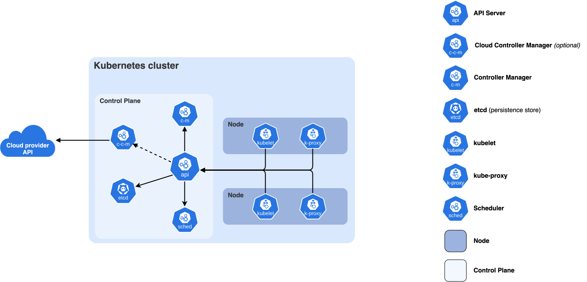

Software Tool: AWS Services for HPC Systems
The AWS services that support HPC systems, with Kubernetes and AWS ParallelCluster in more detail and interview questions for an HPC engineer role.
The AWS services that support High-Performance Computing (HPC) systems, plus Kubernetes and AWS ParallelCluster in more detail. By the end you'll know which service does which job, and have answers to common interview questions on the topic.
In this Chapter, we are interested in introducing the AWS services that support the High-Performance Computing (HPC) Systems.
HPC means running big computing jobs, such as machine learning or simulations, on many machines working together. AWS sells the pieces for that as separate services: compute, fast network, storage, scheduling. This page maps them out so you can tell which one to reach for.
Who this is for: engineers who need to run HPC or ML workloads on AWS, or who are preparing for an HPC systems engineer interview.
Table of Content
- Software Tool: AWS Services for HPC Systems
- Table of Content
- AWS Services for HPC Systems
- What is Kubernetes?
- Provided Features
- Benefits of Using
- AWS ParallelCluster
- Benefits
- Supported HPC Workloads
- AWS Services FAQs Interview for HPC Systems Engineer Position
AWS Services for HPC Systems
The following AWS services can be used in HPC systems: |Service|Details| |-|-| |Amazon Elastic Compute Cloud (Amazon EC2)| Amazon EC2 provides scalable computing capacity in the cloud. You can use Amazon EC2 to create instances of the latest-generation high-performance computing (HPC) processors, such as the Intel Xeon Scalable processors and the AMD EPYC processors. Amazon EC2 also offers a variety of instance types that are optimized for specific HPC workloads, such as machine learning, computational fluid dynamics, and seismic processing. |Amazon Elastic Fabric Adapter (Amazon EFA)| Amazon EFA is a high-performance network interface that is designed for HPC applications. Amazon EFA provides low latency and high throughput communication between Amazon EC2 instances. |Amazon FSx for Lustre| Amazon FSx for Lustre is a fully managed, high-performance file system that is designed for HPC workloads. Amazon FSx for Lustre provides scalable storage capacity and high-performance throughput. |AWS Batch| AWS Batch is a job scheduler that can be used to manage and scale HPC workloads. AWS Batch can automatically scale your HPC workload based on demand, and it can optimize your costs by using Spot Instances. |AWS ParallelCluster| AWS ParallelCluster is a managed service that makes it easy to set up and manage HPC clusters on AWS. AWS ParallelCluster provides a variety of cluster templates that are optimized for specific HPC workloads, and it makes it easy to scale your cluster up or down as needed. |Amazon Simple Storage Service (Amazon S3)| Amazon S3 is a highly scalable object storage service that can be used to store and access large datasets for HPC workloads. |Amazon Elastic Block Store (Amazon EBS)| Amazon EBS is a block storage service that can be used to store and access persistent data for HPC workloads. |Amazon Elastic Kubernetes Service (Amazon EKS)| Amazon EKS is a managed service that makes it easy to run Kubernetes on AWS. You can use Amazon EKS to run Kubernetes-based HPC applications.
You can choose the AWS services that are right for your HPC needs based on the specific requirements of your applications and workloads.
What is Kubernetes?
Kubernetes is an open-source container orchestration platform. It automates the deployment, scaling, and management of containerized applications. Kubernetes makes it easy to deploy applications across multiple hosts, and it provides a number of features that make it easy to manage and scale applications.

Kubernetes is based on the concept of a cluster. A cluster is a group of machines that work together to run containerized applications. Kubernetes uses a master node to manage the cluster. The master node is responsible for scheduling containers to the worker nodes, and it also monitors the health of the cluster.
The worker nodes are the machines that run the containers. Kubernetes automatically distributes the containers to the worker nodes based on a number of factors, such as the availability of resources and the load on the nodes.
Provided Features
Kubernetes provides a number of features that make it easy to manage and scale containerized applications. These features include: |Feature|Description| |-|-| |Deployment| Kubernetes makes it easy to deploy containerized applications to a cluster. You can use Kubernetes to deploy a single container or a group of containers. |Scaling| Kubernetes makes it easy to scale containerized applications up or down. You can scale applications manually or automatically based on demand. |Health monitoring| Kubernetes monitors the health of the containers in a cluster. If a container fails, Kubernetes will automatically restart it. |Service discovery| Kubernetes makes it easy for containers to discover each other. This makes it easy to build distributed applications. |Load balancing| Kubernetes can load balance traffic across the containers in a cluster. This makes it easy to ensure that traffic is distributed evenly across the cluster.
Kubernetes is a powerful tool that can be used to manage and scale containerized applications. It is a popular choice for organizations that are looking to build and deploy scalable applications.
Benefits of Using
Here are some of the benefits of using Kubernetes: |Benefit|Details| |-|-| |Scalability| Kubernetes makes it easy to scale your applications up or down based on demand. This can save you money on infrastructure costs. |Availability| Kubernetes automatically restarts failed containers, which helps to improve the availability of your applications. |Manageability| Kubernetes provides a number of features that make it easy to manage your applications, such as deployment, scaling, and health monitoring. |Portability| Kubernetes can be used to deploy applications on a variety of platforms, including on-premises, in the cloud, and in hybrid environments.
AWS ParallelCluster
AWS ParallelCluster is a managed service that makes it easy to set up and manage High Performance Computing (HPC) clusters on AWS. It provides a variety of cluster templates that are optimized for specific HPC workloads, and it makes it easy to scale your cluster up or down as needed.
AWS ParallelCluster is built on top of the following AWS services:
- Amazon Elastic Compute Cloud (Amazon EC2)
- Amazon Elastic Fabric Adapter (Amazon EFA)
- Amazon FSx for Lustre
- AWS Batch
AWS ParallelCluster is a good choice for organizations that need to run HPC workloads on AWS. It is easy to use and manage, and it provides a variety of features that are optimized for HPC workloads.
Benefits
Here are some of the benefits of using AWS ParallelCluster: |Benefit|Details| |-|-| |Easy to use| AWS ParallelCluster provides a simple user interface and command line interface for managing your HPC clusters. |Managed service| AWS ParallelCluster is a managed service, which means that AWS takes care of the underlying infrastructure and software. |Scalable| AWS ParallelCluster makes it easy to scale your HPC clusters up or down as needed. |High performance| AWS ParallelCluster is optimized for HPC workloads, and it provides low latency and high throughput communication between Amazon EC2 instances.
If you are looking for a way to run HPC workloads on AWS, AWS ParallelCluster is a good option to consider.
Supported HPC Workloads
Here are some examples of HPC workloads that can be run on AWS ParallelCluster:
- Machine learning
- Computational fluid dynamics
- Seismic processing
- Financial modeling
- Scientific research
- Engineering simulations
AWS ParallelCluster is a flexible and powerful tool that can be used to run a wide variety of HPC workloads.
AWS Services FAQs Interview for HPC Systems Engineer Position
Here are some related interview questions regarding AWS Services for HPC system engineer position and their answers:
Q: What are the different AWS services that can be used for HPC systems?
Answer: The following AWS services can be used for HPC systems:
- Amazon Elastic Compute Cloud (Amazon EC2)
- Amazon Elastic Fabric Adapter (Amazon EFA)
- Amazon FSx for Lustre
- AWS Batch
- AWS ParallelCluster
- Amazon Simple Storage Service (Amazon S3)
- Amazon Elastic Block Store (Amazon EBS)
- Amazon Elastic Kubernetes Service (Amazon EKS)
Q: What are the benefits of using AWS ParallelCluster for HPC systems?
Answer: AWS ParallelCluster is a managed service that makes it easy to set up and manage HPC clusters on AWS. It provides a variety of cluster templates that are optimized for specific HPC workloads, and it makes it easy to scale your cluster up or down as needed.
Some of the benefits of using AWS ParallelCluster for HPC systems include:
- Easy to use: AWS ParallelCluster provides a simple user interface and command line interface for managing your HPC clusters.
- Managed service: AWS ParallelCluster is a managed service, which means that AWS takes care of the underlying infrastructure and software.
- Scalable: AWS ParallelCluster makes it easy to scale your HPC clusters up or down as needed.
- High performance: AWS ParallelCluster is optimized for HPC workloads, and it provides low latency and high throughput communication between Amazon EC2 instances.
Q: What are some of the challenges of managing HPC systems on AWS?
Answer: Some of the challenges of managing HPC systems on AWS include:
- Cost optimization: It is important to optimize the cost of your HPC systems on AWS. You can do this by using Spot Instances, selecting the right instance types, and using AWS Batch.
- Security: It is important to secure your HPC systems on AWS. You can do this by using Identity and Access Management (IAM) roles, VPC security groups, and AWS CloudTrail.
- Performance: It is important to monitor the performance of your HPC systems on AWS. You can do this by using Amazon CloudWatch and AWS CloudTrail.
Q: What are some of the best practices for managing HPC systems on AWS?
Answer: Some of the best practices for managing HPC systems on AWS include:
- Use the right instance types: Choose the right instance types for your HPC workloads. AWS offers a variety of instance types that are optimized for specific HPC workloads.
- Use Spot Instances: Spot Instances can help you to save money on your HPC systems on AWS. Spot Instances are spare capacity that is available on the AWS Cloud.
- Use AWS Batch: AWS Batch can help you to scale your HPC workloads up or down as needed. AWS Batch also provides a number of features that can help you to optimize the cost and performance of your HPC workloads.
- Use IAM roles: Use IAM roles to control access to your HPC systems on AWS. IAM roles allow you to grant users permissions to perform specific tasks on your HPC systems.
- Use VPC security groups: Use VPC security groups to control network access to your HPC systems on AWS. VPC security groups allow you to specify the IP addresses that are allowed to access your HPC systems.
- Use AWS CloudTrail: Use AWS CloudTrail to log all activity on your HPC systems on AWS. AWS CloudTrail can help you to troubleshoot problems and to comply with security requirements.
- Monitor performance: Use Amazon CloudWatch and AWS CloudTrail to monitor the performance of your HPC systems on AWS. Monitoring performance can help you to identify and troubleshoot problems.